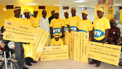
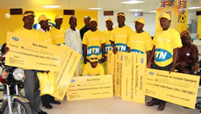

MTN Facebook SMS
MTN Révolutionne ta manière de communiquer sur Facebook. Désomais, plus besoin d'être forcement connecté à internet pour publier sur ton mur, ajouter tes amis et commenter leurs status... Désomais gère ton compte facebook par sms depuis ton mobile 24/24.
- Inscris-toi, en envoyant FB au 7050. Après l'inscription, tu reçois ton code de confirmation. Coût 25FCFA
- Rends-toi ensuite sur ton compte Facebook via ton mobile ou ton ordi pour enregistrer ton code de confirmation.
- Clique sur "Compte", ensuite "paramètre de compte", puis Mobile".
- Saisis ton code de confirmation dans la case prévue à cet effet et définis tes préférences (recevoir seulement les notifications de tes amis, choisir les horaires de réception des notification etc...).
- Clique sur Enregistrer les préférences pour finir.
- Envoie un SMS vide au 7050 pour confirmer ton enregistrement et c'est ok tu fais parti des millions d'abonnés dans le monde a utiliser MTN Facebook SMS
NB: Chaque SMS envoyé au 7050 est facturé au tarif en vigueur du SMS:25F CFA TTC.


 
